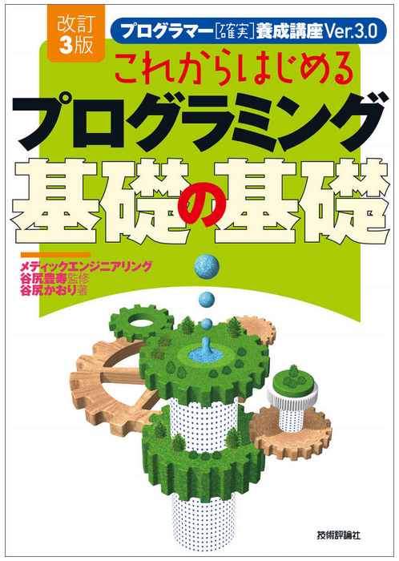
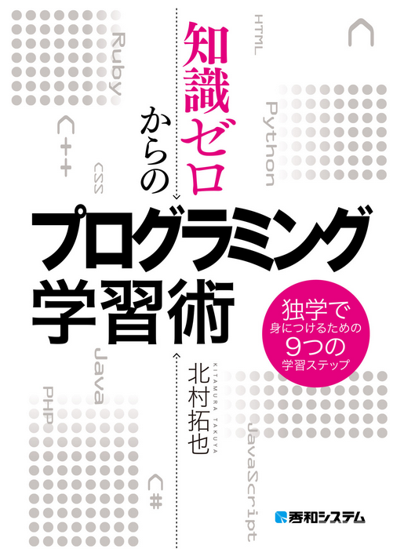
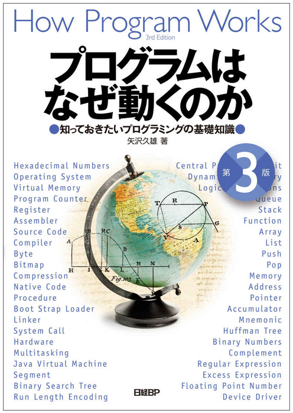
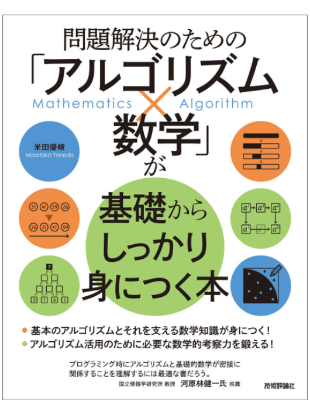

書籍は情報の宝庫
「え？無料だからこのサイト探して来たのに結局技術本買わないとダメなのか」という声が聞こえましたが、まず聞いてください。
あくまでおすすめの書籍を紹介するだけです。そんな情報いらない、本買う余裕ありませんな方は次に進みましょう^^;
ちょっと前までは本屋さんへ出向かないとこういった技術本は買えませんでした。しかし今は電子書籍があります。
羨ましい時代になりましたね。これを利用すればほら、もうパソコンとお友達ですよ^^
電子書籍と言えば Amazon Kindle です。私もパソコンにKindleアプリを入れています。
・・・という事で、ここではプログラミングを始める時に役に立つKindle技術本を紹介させて下さい。
|  |
谷尻 かおり (著) 技術評論社 |
技術評論社から発刊されている「これからはじめるプログラミング 基礎の基礎」です。
この書籍はかなりおすすめです。特にこれから本格的にIT業界を目指したい方、何度かプログラミングに挑戦したがよく分からずに諦めかけている方などにとっては攻略本になりうると言ってもいい内容が書かれています。
パソコンとはなんぞや？コンピュータとは？から始まり、本当の基礎知識がこれで全て分かります。
ちなみに私も10年以上前にこの書籍を本屋で買い、ほぼ知識0からシステム開発者にまでなれました。とても素晴らしい一冊です^^
|  |
知識ゼロからのプログラミング学習術 独学で身につけるための9つの学習ステップ 北村拓也 (著) 秀和システム |
秀和システムから発刊されている「知識ゼロからのプログラミング学習術 独学で身につけるための9つの学習ステップ」です。
アプリやAIなどを作るためにどういう順番で学習を進めていけばいいか最適なプロセスルートが紹介されており、目的から何をすればいいかがすぐわかります。
モチベーションを上げるための秘訣や業界の特徴について書かれていますので実感が湧きやすいと思います。
|  |
プログラムはなぜ動くのか 第３版 知っておきたいプログラミングの基礎知識 矢沢 久雄 (著) 日経BP |
日経BPから発刊されている「プログラムはなぜ動くのか 第３版 知っておきたいプログラミングの基礎知識」です。
パソコンの中でどういった事が行われているのか、プログラムによって何が起きるのかがハードの視点から説明されています。
全くの未経験者にとってはちょっと難しい内容かもしれませんが、読んで損はないと思います。
またこの書籍は他に「コンピュータはなぜ動くのか」「Windowsはなぜ動くのか」「情報はなぜビットなのか」などの姉妹本があり、こちらもおすすめです。
|
松下 孝太郎 (著), 山本 光 (著) 技術評論社 |
技術評論社から発刊されている「スクラッチプログラミング事例大全集」です。
近年話題になってプログラミングの入門アプリ。視覚的に分かりやすい最適なフローチャートをレゴブロックのように組立て自分の思い通りにプログラムを作る事ができます。
スクラッチという言語は、教育現場などで実際に学習教材として使用されています。
|  |
問題解決のための「アルゴリズム×数学」が基礎からしっかり身につく本 米田 優峻 (著) 技術評論社 |
最後はまたまた技術評論社から発刊されている「問題解決のための「アルゴリズム×数学」が基礎からしっかり身につく本」です。技術評論社多い^^;
システムを開発する上で必要となってくる思考力(アルゴリズム)について数学的視点から探っていく書籍です。数学の知識がないと内容的に理解が難しい部分もありますが、これを機に数学の学習も…？( ^ω^)
ただなるほどな、と思わせる部分も多くあり、私も実際に読んでかなり参考になりました。
これらの書籍を読んでしまえばそれでももうこのウェブサイトは必要なくなるかもしれません。
それならそれで大変喜ばしい事です。
理屈が分かるかどうかの境目は、皆さんそれぞれ違うと思いますので、必要な知識を得て「もう十分だろう」と思ったら次のステップに進んでOKです。
反対に進んではみたがイマイチピンと来ない部分があると思ったらいつでもここまで戻ってきてください。
ITの世界は複雑に入り組んだ迷宮のようで、分かってしまえば単純な仕組みです。
コラム：基礎知識がある人とない人の差 |
|
|
これからプログラミングを始めようとしている方たちは、早くプログラムを書いてそれを動かしたいと思っているかもしれません。私も最初そうでした。
しかしみんながみんなそうではないはずです。
世界は皆さんが思っているような都合の良い仕組みにはなっていません。
当たり前のように聞こえる雑草のような情報一粒一粒がいつか必ず役に立ち、皆さんが報われる日に繋がる事でしょう。 |
有用なウェブサイト
ITの世界では仕組みや区分などに名前がいっぱいついています。
その量が膨大でとてもではありませんが、全部覚える事はほぼ不可能です。
そこでこれから学習する上で必ず役に立つIT情報サイトをいくつか紹介させて下さい。
「IT用語辞典 e-Words」は株式会社インセプトが管理するIT用語辞典サイトです。
膨大な数のIT用語があります。分からない単語を検索すると大体このサイトが検索結果の上位にヒットしています。
「Qiitaは、エンジニアに関する知識を記録・共有するためのサービスです。」と書かれています。
一般人投稿型のウェブログエントリーサイトで、私もよく利用しています。いつもお世話になっております^^
経済産業省が管理する独立法人「情報処理推進機構」が運営するウェブサイトです。
プログラミングに直接的に関わるウェブサイトではありませんが、近年ワールドワイドの問題として騒がれているセキュリティに関する話題などが更新されます。
これからITの世界に進むのなら是非知っておきたいサイトです。
プログラマーを目指す方は、国家資格の「情報処理技術者試験」に挑戦してみるのもいいかもしれません。
石川県に拠点を置くIT企業「Ash」のホームぺージです。
Unicode、JIS系の 文字コード一覧表 が公開されています。これはとても有用です。
プログラミングの入門講座が揃っているウェブサイトです。特にアルゴリズム入門は必携。
プログラミングとは直接関係ないですが、色々な計算ができるユーティリティ系のスクリプトが公開されています。
他にも課金してもいいならプログラミング・スクールなどのサイトもあります。「Progate」「ドットインストール」など。
またYouTubeには無料でたくさんのプログラミング講座動画が公開されています。
その他、有用なウェブサイトは無数に転がっている世の中です。情報は有効に活用しましょう^^